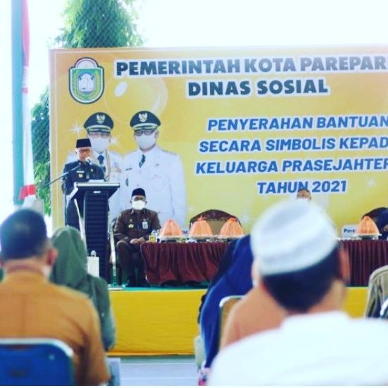
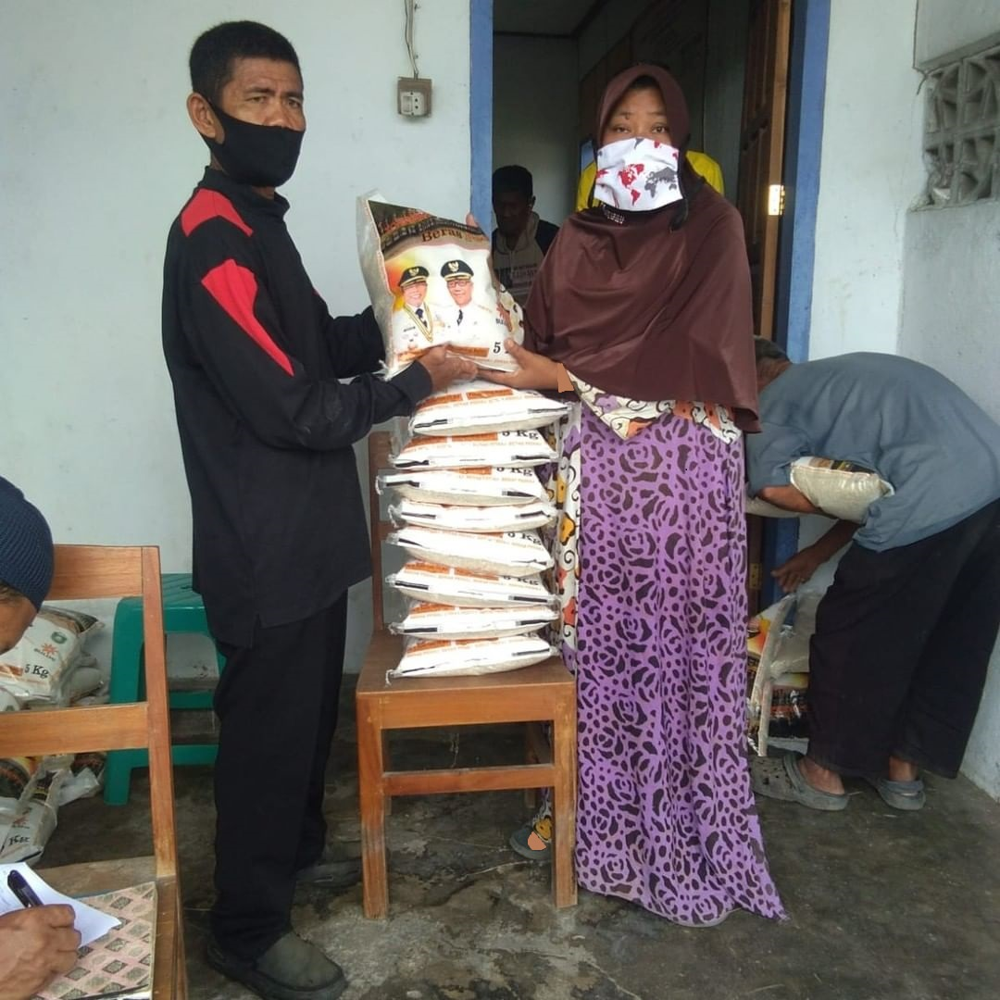
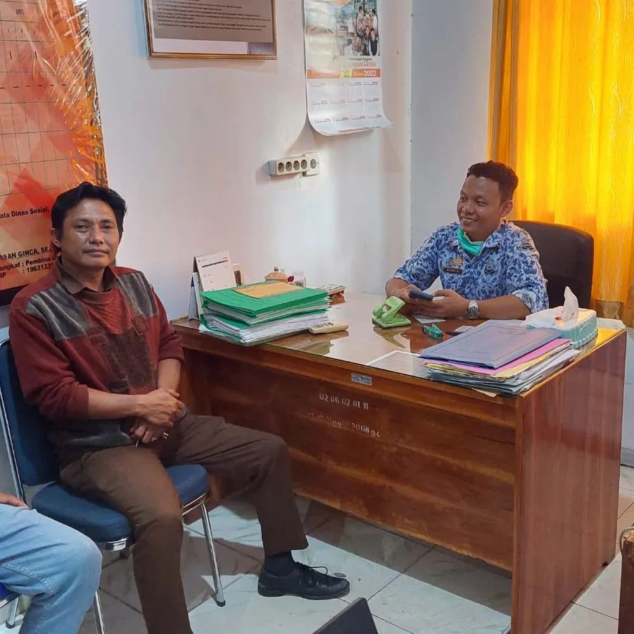

Daftar Berita

Penyerahan Bantuan Prasejahtera Tahun 2021
12/Mei/2022

Launching Pemberian Bantuan Rastra Daerah 2022
12/Mei/2022
Tim Safari Ramadhan Dinas Sosial Parepare
12/Mei/2022


Terima Aduan Masyarakat Terkait Hak Asuh Anak
18/Mei/2022